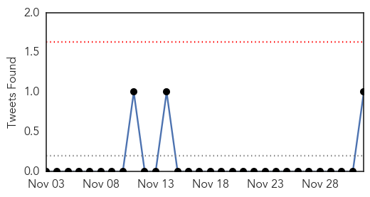
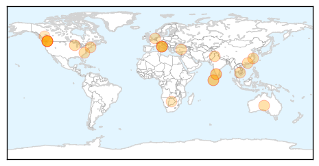
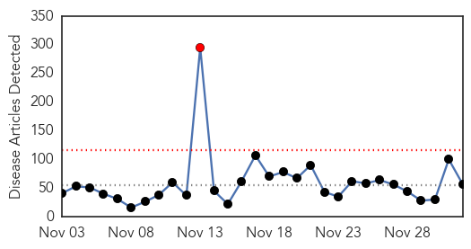
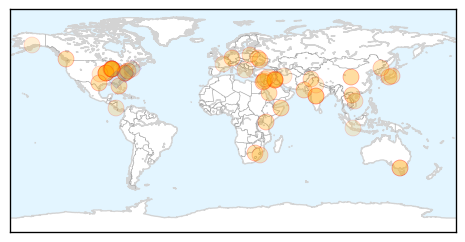

Influenza
30-Day Web Trend
4 alerts, 0 warnings

30-Day Twitter Trend
1 alerts, 0 warnings

Article Locations
Article Confidences

Top Articles:
- 0.998
- Flu cases higher this year
- 0.994
- State gears up for flu vaccine week
- 0.992
- Pakistan at high risk due to extensive travel of its citizens to and from endemic countries
- 0.992
- Get flu shots now, health experts warn public
- 0.991
- Cases of influenza predicted to increase: CDC
- 0.984
- EU-designed forecasting model developed to predict spread of Ebola
- 0.984
- Agrippal (Inactivated Influenza Vaccine) Drug
- 0.966
- Avian influenza case confirmed in Guangdong, China
- 0.947
- Avian flu detected at 2 Fraser Valley poultry farms
- 0.938
- Gov’t advises to bundle up, National, Phnom Penh Post
- 0.928
- Avian flu detected at 2 Fraser Valley poultry farms
- 0.919
- Novartis' flu vaccine in the clear over 19 deaths, says AIFA
- 0.914
- Maldives warns against poultry imports from Kerala
- 0.912
- Avian flu detected at two Fraser Valley farms; up to 18,000 chickens, turkeys dead or to be destroyed (updated)
- 0.909
- New Dutch cull ordered after bird flu confirmed as H5N8
- 0.896
- Maldives warns against poultry imports from Kerala
- 0.885
- Maldives warns against poultry imports from Indian region
- 0.869
- Poultry, People under Observation for Bird Flu in Kerala
- 0.792
- A new study suggests the HIV virus may be getting weaker
- 0.782
- Avian flu hits 18,000 Fraser Valley birds
- 0.769
- Canada: H5 bird flu detected on two British Columbia farms
- 0.753
- UPDATE: Turkeys to be destroyed after avian flu hits Abbotsford farm
- 0.749
- MoH allays vaccine fears, says influenza shots ‘perfectly safe’
- 0.699
- Avian flu confirmed at two Fraser Valley farms
- 0.538
- Avian flu confirmed on two Fraser Valley farms
Top Tweets:
- 0.932
- Avian Influenza and Pandemic Threat NewsPouch, 2 Dec 2014 : avianinfluenza, ebola EbolaResponse mers http://t.co/2qOfqzieWt
Unknown
30-Day Web Trend
1 alerts, 0 warnings

30-Day Twitter Trend
1 alerts, 0 warnings

Article Locations
Article Confidences

Top Articles:
- 0.966
- Flu increasing at a rate of 10% per week in Central Texas
- 0.960
- CDC: Link between polio-like illness and EV-D68 looks likely
- 0.960
- Urgent Cares see big uptick in flu cases
- 0.953
- The Powell River Peak > Archives > News > Briefly
- 0.917
- Chicago Tribune
- 0.917
- Chicago Tribune
- 0.917
- Chicago Tribune
- 0.917
- Chicago Tribune
- 0.917
- Chicago Tribune
- 0.917
- Chicago Tribune
- 0.917
- Chicago Tribune
- 0.917
- Chicago Tribune
- 0.917
- Chicago Tribune
- 0.917
- Chicago Tribune
- 0.917
- Chicago Tribune
- 0.917
- Chicago Tribune
- 0.917
- Chicago Tribune
- 0.917
- Chicago Tribune
- 0.917
- Chicago Tribune
- 0.917
- Chicago Tribune
- 0.917
- Chicago Tribune
- 0.917
- Chicago Tribune
- 0.917
- Chicago Tribune
- 0.917
- Chicago Tribune
- 0.917
- Chicago Tribune
- 0.910
- The world windows to Thailand
- 0.894
- Monkey Fever: Tribals Give Vaccination Cold Shoulder
- 0.866
- NATO, Ukraine condemn Russian military build-up in Crimea
- 0.861
- After severe asthma and paralysis, enterovirus d-68 has gone away — but its mysteries remain
- 0.813
- St. Louis Co. Health Officials: Flu has arrived
- 0.806
- Taiwan raises H7N9 travel ...｜Society｜WCT
- 0.789
- Citizens advised to take preventive measures against seasonal diseases
- 0.758
- 87 per cent unaware of HIV+ status, may be infecting others
- 0.731
- Poland and Lithuania Report ASF Wild Boar Deaths
- 0.722
- Malaria deaths in South Africa climb
- 0.688
- Around 3,750 HIV/AIDS cases in LebanonHealthcare
- 0.682
- Thousands of birds dead after avian flu reported on two B.C. farms
- 0.648
- SGGP English Edition- Medical workers asked to focus on treating snakebite victims
- 0.635
- Study Finds That Virus May Eventually Become 'Almost Harmless'
- 0.621
- LatAm marks advances against AIDS, announces measures for access to treatment
- 0.586
- Albania registers 75 new cases of AIDS in 2014
- 0.573
- Making it easier and cheaper to control cervical cancer
- 0.549
- Latin America Marks Advances against AIDS, Announces Measures for Access to Treatment
- 0.546
- World AIDS Day: HIV cases increasing in R.I.
- 0.545
- Video: Europe is Palestinians ‘only hope for a two-state solution’
- 0.545
- Death toll in Syria conflict ‘rises above 200,000’
- 0.545
- Lebanon detains IS group leader’s wife and child
- 0.545
- Kenya security chiefs ousted after new al Shabaab attack
- 0.545
- Is the woman detained in Lebanon Baghdadi’s wife?
- 0.545
- France-India Rafale jet fighter deal back on track
Showing top 50 articles...
Top Tweets:
- 0.857
- Flu vaccination can reduce flu illnesses, doctors' visits, and missed work due to flu. Getafluvax today. http://t.co/cWLFiHHDMy
- 0.801
- DÃa buenoo acabo de sacar A en el fucking examen ... 🎉🎉🎉🎉🎉🎉
- 0.617
- GAR update on 18 MERS cases, 4 deaths in KSA during November. Half of the cases had contact with camels. http://t.co/5GWRAdaF2e
- 0.588
- RT: Pregnant? You're at high risk for flu complications. Seek medical care quickly if you think you have the flu http://t.c…
- 0.507
- H5 bird flu virus found on farms in B.C.'s Fraser Valley. This part of the province has had several large bird flu outbreaks in the past.